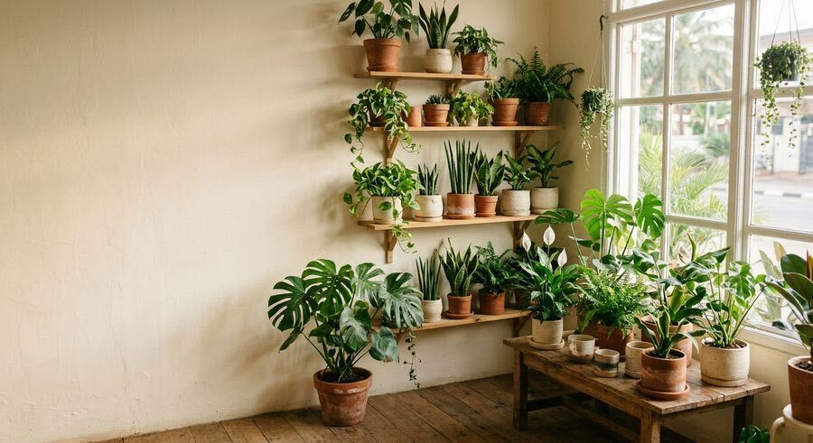
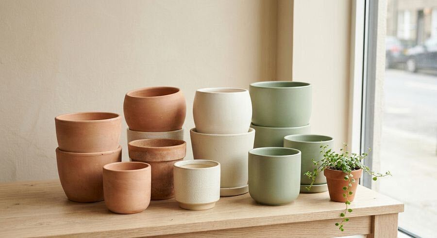
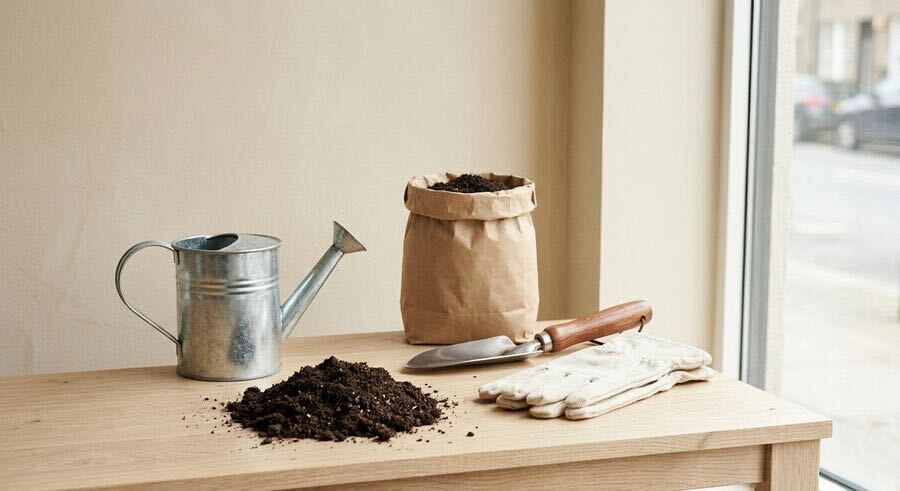

A calm corner for plants in Accra
Houseplants, pots and soil, with friendly advice for first-time plant owners.
Find us
Open Monday to Saturday, 8am to 6pm
14 Okaishie Lane, AccraClosed on Sundays

What Ama sells
Plants for your home and office, and everything they need to settle in. Whether this is your first plant or your fiftieth, there is something here for you.
-

Houseplants
From GH₵ 25
-

Pots & Planters
From GH₵ 15
-

Soil & Accessories
From GH₵ 10
Available Houseplants
Plant care tips
Tap a topic to read Ama's care guide for that type of plant.
Houseplants
Most houseplants prefer indirect sunlight and do well near a window that does not get direct afternoon sun. Water when the top inch of soil feels dry, usually every 5 to 7 days. Avoid leaving them in standing water as this causes root rot.
Succulents & Cacti
Succulents and cacti store water in their leaves and stems, so they need very little watering. Water deeply once every two to three weeks and let the soil dry out completely between waterings. They love bright, direct sunlight.
Tropical Plants
Tropical plants like high humidity and warm temperatures. Mist the leaves regularly or place a tray of water near the plant to keep moisture in the air. Keep away from cold drafts and air conditioning vents.
Outdoor Plants
Outdoor plants need regular watering, especially in the dry season. Water in the early morning or late evening to reduce evaporation. Feed with a general-purpose fertiliser every four to six weeks during the growing season.
About Ama
Ama has been running her plant shop in the neighbourhood for over 5 years now. She loves plants and wants to help everyone keep their plants alive and thriving. If you are not sure what plant is right for you, just ask her!
Ask Ama
Ask anything. No question is too small.